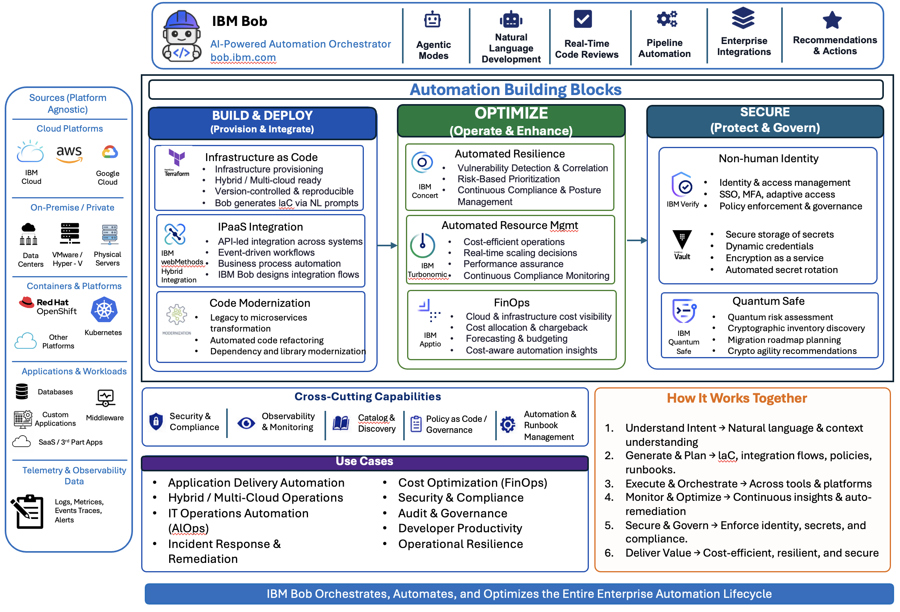

Automation Core¶
Welcome to the Automation Building Blocks documentation. This collection provides ready-to-use accelerators organized into three main categories: Build & Deploy, Optimize, and Secure.
Automation Core provides a comprehensive framework for building, optimizing, and securing enterprise applications and infrastructure. By combining intelligent automation, operational excellence, and robust security capabilities, organizations can accelerate delivery, reduce operational overhead, and maintain resilience across hybrid cloud environments.

Build and Deploy¶
Accelerate application delivery with standardized integration, infrastructure provisioning, and AI-assisted code modernization. Transform legacy systems into cloud-native architectures while maintaining consistency and security across all environments.
Infrastructure as Code¶
Automate infrastructure provisioning and management with declarative configuration and version-controlled templates.
- Infrastructure Provisioning: Automated deployment of compute, storage, and networking resources
- Hybrid / Multi-cloud Ready: Consistent provisioning across AWS, Azure, GCP, and on-premises environments
- Bob-Generated IaC: Natural language prompts transformed into Terraform and Ansible configurations
- Configuration Management: Drift detection and automated remediation
- Environment Standardization: Repeatable, consistent infrastructure across dev, test, and production
iPaaS Integration¶
Connect applications, data, and business processes across hybrid cloud environments with IBM webMethods.
- API-led Integration: Expose and consume APIs across distributed systems
- Event-driven Workflows: Real-time data synchronization and event processing
- Business Process Automation: Orchestrate complex workflows spanning multiple systems
- Hybrid Integration: Seamlessly connect cloud and on-premises applications
- Bob-Designed Integration Flows: AI-assisted integration pattern generation and workflow design
Code Modernization¶
Transform legacy applications and middleware to modern, cloud-native architectures with AI-powered tools.
- Legacy to Microservices Transformation: Decompose monolithic applications into scalable microservices
- Automated Code Refactoring: Modernize COBOL, mainframe, and legacy Java applications
- Dependency and Library Modernization: Update frameworks, libraries, and runtime environments
- Containerization: Package applications for Kubernetes and OpenShift deployment
- Technical Debt Elimination: Systematic removal of outdated patterns and practices
Optimize¶
Continuously improve cost efficiency, operational stability, and resource utilization through intelligent automation. Gain financial visibility, automate resilience, and optimize resource allocation to ensure applications remain performant and economically sustainable.
Automated Resilience¶
Proactively identify and remediate vulnerabilities, compliance gaps, and operational risks with IBM Concert.
- Vulnerability Detection & Correlation: Continuous CVE monitoring and impact analysis
- Risk-Based Prioritization: Intelligent ranking of security and operational risks
- Continuous Compliance & Posture Management: Automated compliance monitoring and drift detection
- Certificate Lifecycle Management: Automated certificate renewal and expiration tracking
- Dependency Risk Mapping: Identify and assess supply chain vulnerabilities
- Systemic Resilience Analysis: Detect weaknesses before they impact business-critical workloads
Automated Resource Management¶
Optimize application performance and infrastructure costs with intelligent, real-time resource allocation using IBM Turbonomic.
- Cost-Efficient Operations: Balance performance requirements with infrastructure spend
- Real-time Scaling Decisions: Automated resource allocation based on workload demand
- Performance Assurance: Prevent bottlenecks and ensure SLA compliance
- Workload Placement Optimization: Intelligent scheduling across hybrid cloud infrastructure
- Container Density Optimization: Maximize resource utilization in Kubernetes environments
- Automated Performance Remediation: Self-healing infrastructure adjustments
FinOps¶
Gain financial transparency and cost intelligence for cloud investments with IBM Apptio.
- Cloud & Infrastructure Cost Visibility: Granular tracking of spending across all cloud providers
- Cost Allocation & Chargeback: Accurate attribution of costs to teams, projects, and business units
- Forecasting & Budgeting: Predictive analytics for capacity planning and budget management
- Cost-Aware Automation Insights: Recommendations for optimization opportunities
- Unit Economics Analysis: Understand cost per transaction, user, or business outcome
- Spend Anomaly Detection: Identify and alert on unexpected cost increases
Secure¶
Protect enterprise applications, data, and infrastructure through comprehensive identity management, secrets management, and quantum-safe cryptographic capabilities. Implement robust authentication and prepare for post-quantum security threats while maintaining compliance.
Non-human Identity¶
Centralize identity, access control, secrets management, and security enforcement across hybrid environments with IBM Verify and HashiCorp Vault.
IBM Verify - Identity & Access Management: - Identity & Access Management: Unified identity governance for users and service accounts - SSO, MFA, Adaptive Access: Single sign-on with multi-factor authentication and risk-based policies - Policy Enforcement & Governance: Centralized access control and compliance enforcement - Privileged Access Management: Secure access to critical systems and sensitive data - Application Workload Security: Identity-based security for microservices and APIs - Zero Trust Architecture: Continuous verification and least-privilege access
HashiCorp Vault - Secrets Management: - Secure Storage of Secrets: Encrypted storage for API keys, passwords, and certificates - Dynamic Credentials: On-demand generation of short-lived credentials - Encryption as a Service: Centralized encryption and decryption operations - Automated Secret Rotation: Scheduled rotation of credentials without downtime - Audit Logging: Complete visibility into secret access and usage - Integration with CI/CD: Secure secret injection into deployment pipelines
Quantum Safe Cryptography¶
Prepare for post-quantum security threats with IBM Guardium Quantum Safe.
- Quantum Risk Assessment: Evaluate cryptographic vulnerabilities to quantum computing attacks
- Cryptographic Inventory Discovery: Automated discovery of cryptographic assets across the enterprise
- Migration Roadmap Planning: Strategic planning for quantum-safe algorithm adoption
- Crypto Agility Recommendations: Guidance on implementing flexible cryptographic frameworks
- Post-Quantum Algorithm Implementation: Deploy NIST-approved quantum-resistant algorithms
- Compliance & Regulatory Readiness: Ensure adherence to emerging quantum-safe standards
Why Automation Core?¶
Modern enterprises face increasing complexity in managing hybrid cloud environments, legacy system modernization, and evolving security threats. Automation Core addresses these challenges by:
- Accelerating Delivery: Reduce manual processes and standardize deployment pipelines with IaC and iPaaS
- Optimizing Operations: Balance cost, performance, and resilience through intelligent automation and FinOps
- Enhancing Security: Implement robust identity management, secrets management, and quantum-safe cryptography
- Enabling Transformation: Modernize legacy applications while maintaining business continuity
- Ensuring Resilience: Proactively detect and remediate vulnerabilities and compliance gaps
- Maximizing ROI: Optimize cloud spending and resource utilization across hybrid environments
Getting Started¶
- Build and Deploy - Start with infrastructure automation, integration, and application modernization
- Optimize - Implement continuous optimization for cost, performance, and resilience
- Secure - Strengthen security posture with identity management, secrets management, and quantum-safe cryptography
Github Repository¶
Code for these building blocks can be found in the Automation Building Blocks repo.
Together, these building blocks create an integrated automation platform that enhances delivery speed, operational efficiency, and security posture across the entire application lifecycle—from infrastructure provisioning to quantum-safe cryptography.